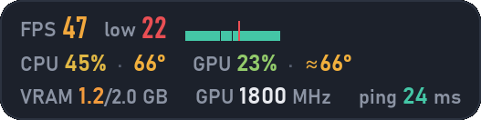
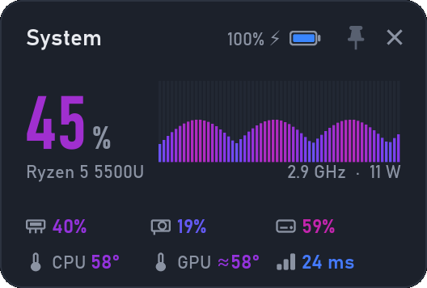
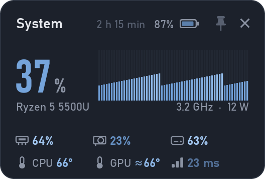
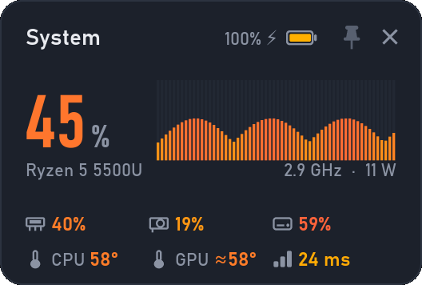

PC Monitor
Your PC's load, temperatures and FPS — on the desktop, on the taskbar and over your game.
Windows 10 and 11. Free and open source. Updates install in one click from the widget.

Your PC's load, temperatures and FPS — on the desktop, on the taskbar and over your game.
Windows 10 and 11. Free and open source. Updates install in one click from the widget.
Every value is coloured on one cool-to-hot scale, so a red number means "look here" whatever it measures.
A small counter sits in the corner of the game: FPS, the low (how far it drops in the worst moments), a frame-time graph where every stutter shows up red, and below it the CPU and GPU load and temperature and your ping. It works with DirectX 9–12, OpenGL and Vulkan games, and clicks go straight through it. The widget itself hides while you play.

Windowed or borderless mode — Windows lets nothing draw over exclusive fullscreen.
Three palettes or two colours of your own, three sizes, a compact mode, any opacity. Pin it to the desktop or keep it on top. Two profiles, Work and Game, each with its own look — Game turns on by itself while you play. The interface speaks English, Ukrainian, German and Russian.



